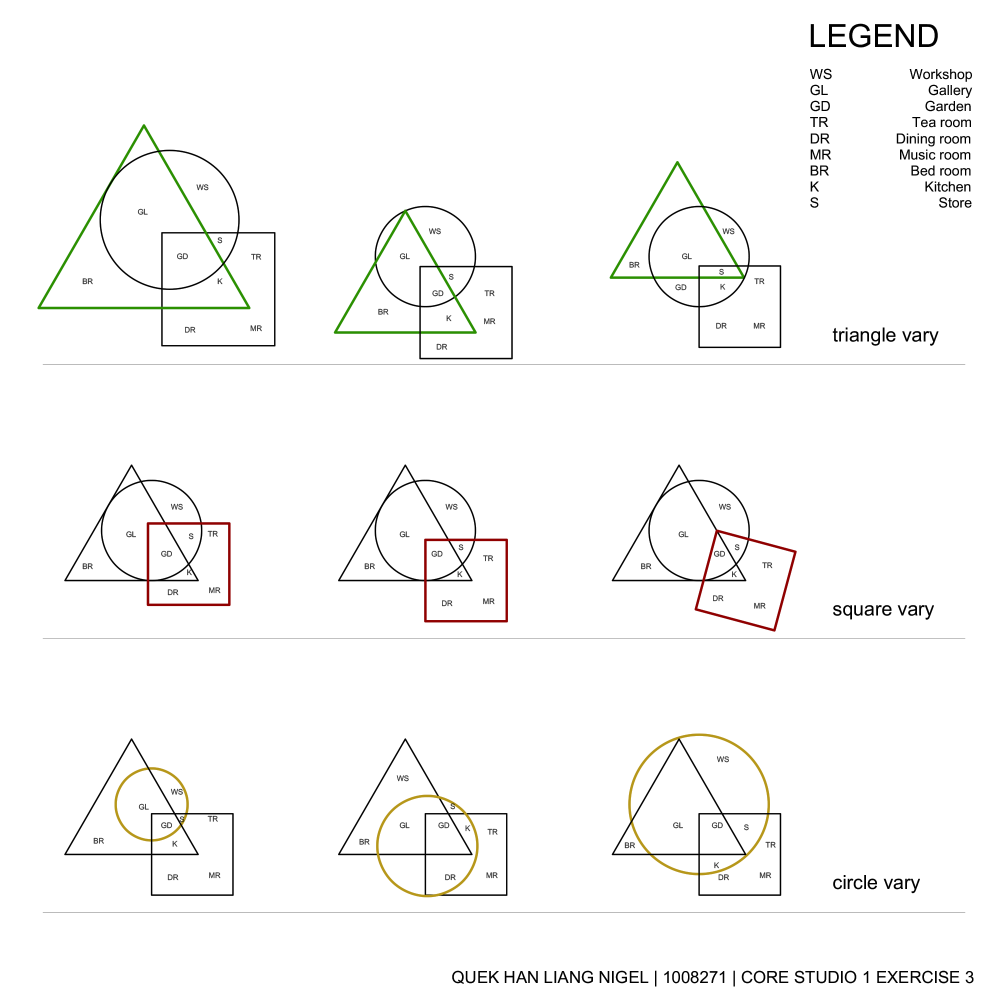
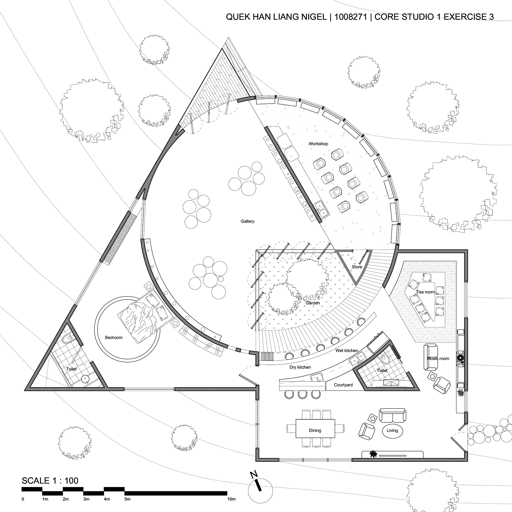
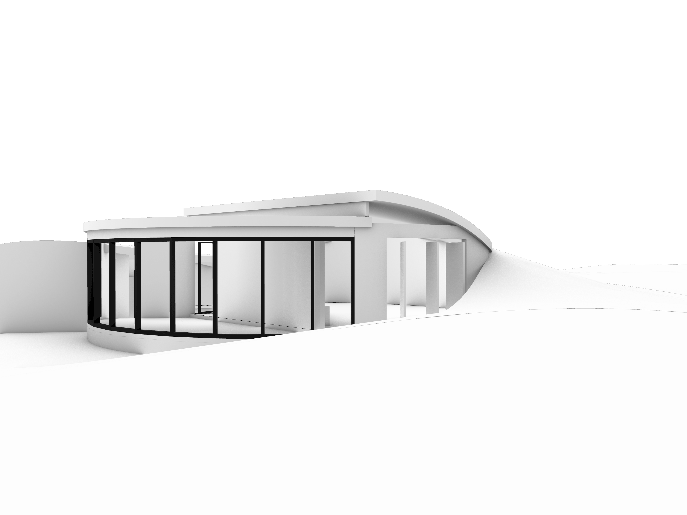
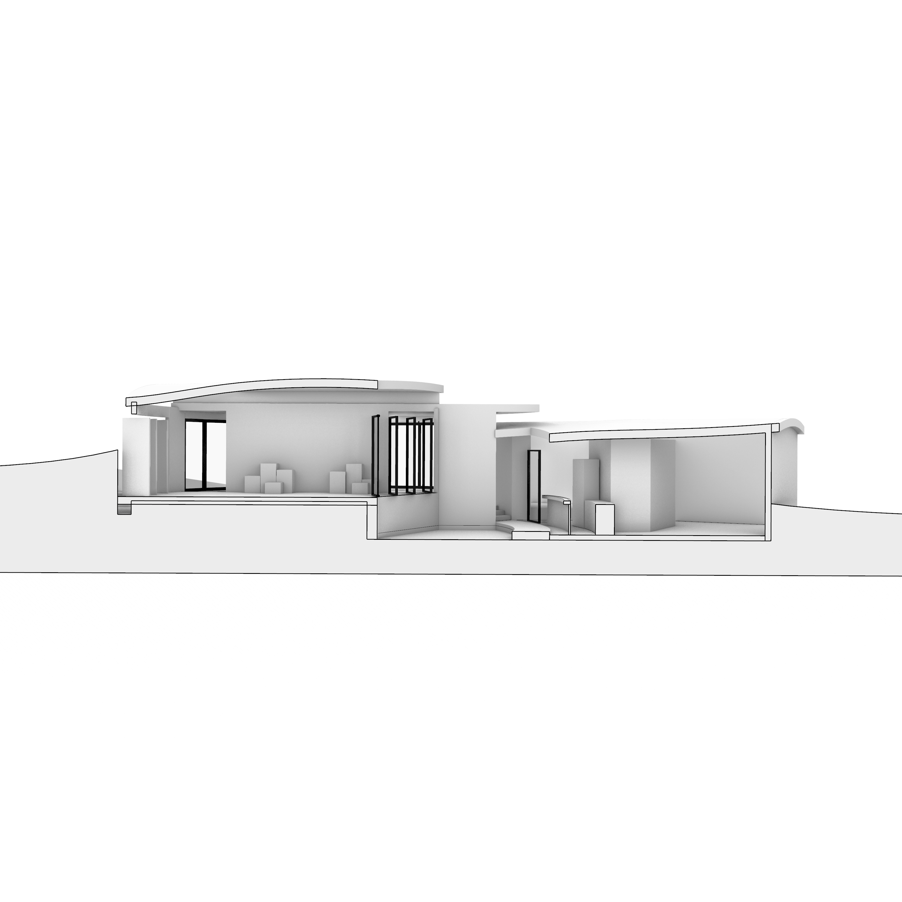
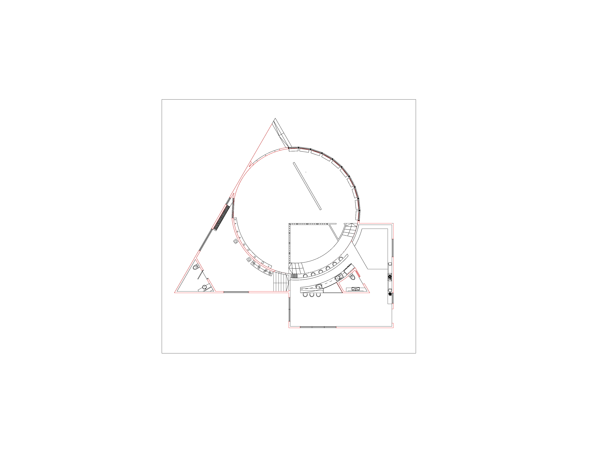

Tessera
Architecture Core Studio 1
A sculptor's live-work residence exploring the interplay of three primary geometric forms — triangle, circle, and square. Each shape defines a distinct spatial quality: the triangle creates intimate, directional spaces; the circle offers open, flowing areas; and the square provides structured, functional rooms. The design investigates how varying the proportions and intersections of these shapes generates different programmatic arrangements.

Shape variation matrix — triangle, square, and circle configurations

Annotated floor plan — programme layout

Exterior perspective

Section perspective

Detailed floor plan